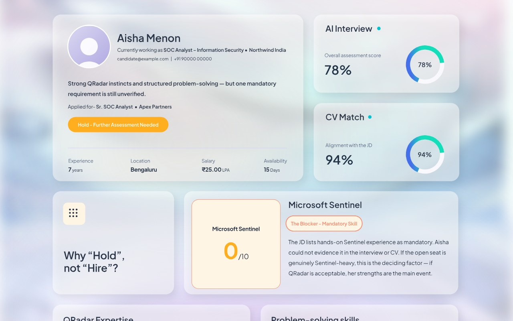
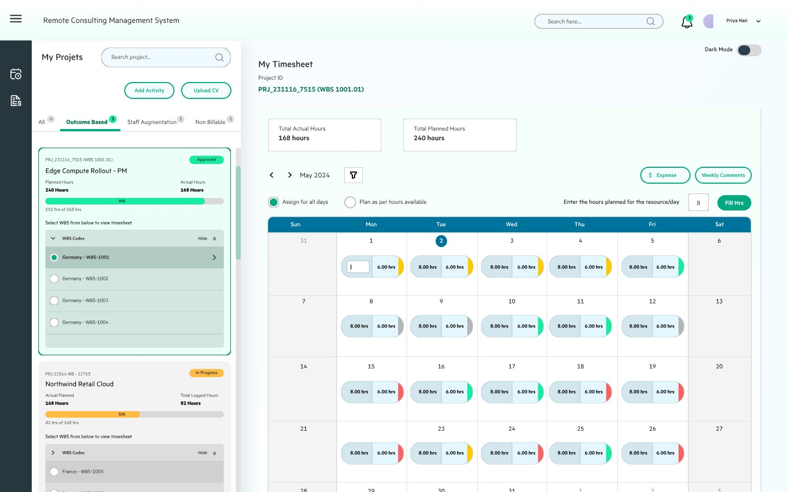
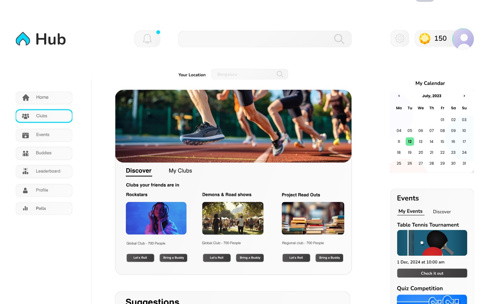
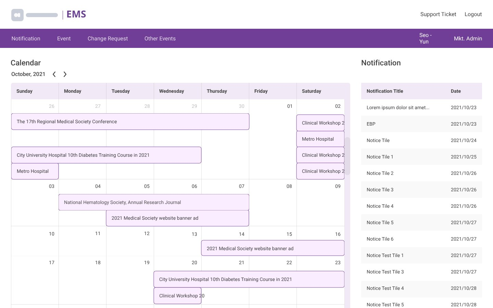
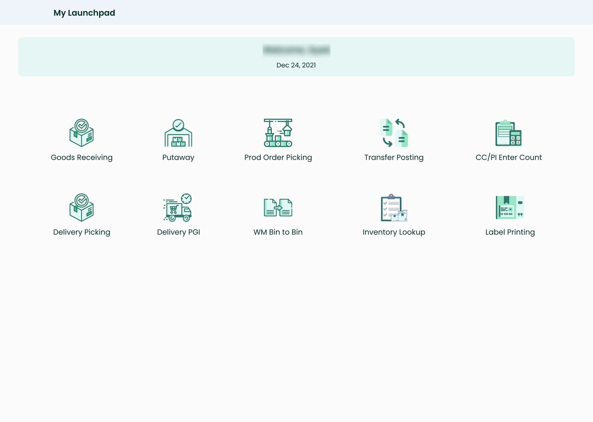
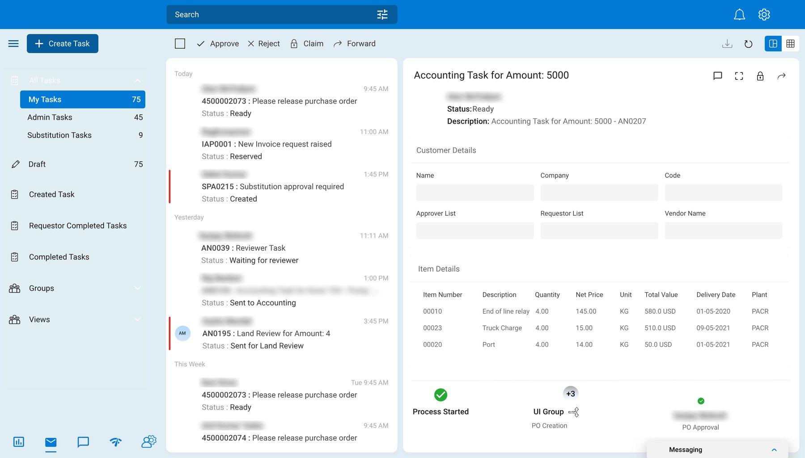

Case studies
11 projects from ten years of B2B SaaS and enterprise work: an AI hiring product, platforms for HPE, regulated pharma, energy and retail operations, design systems and consumer mobile. Each one opens on the problem, then the decisions that shaped it.
11 case studies
-

Career & Hiring Intelligence An AI hiring and career product where every score comes with its reason, and a person makes every final call. -

RCMS for HPE A redesign of HPE's live delivery operations tool, where one system serves two engagement models. -

The Hub for HPE One platform for HPE's employee resource groups, with five roles on a web portal and a mobile PWA. -

Viatris Pharma apps in South Korea and Vietnam, designed with the client in workshops: event sponsorship and employee benefits. -
 Murphy Oil
An automation tool across SAP, SharePoint, SQL and Outlook, and a mobile app for scoring business demands.
Murphy Oil
An automation tool across SAP, SharePoint, SQL and Outlook, and a mobile app for scoring business demands.
-

Baker Hughes A handheld app for ten SAP warehouse transactions, with a web view and a supervisor dashboard. -
 Estée Lauder Companies
Returns and destruction for travel retail, with proof before credit and approval item by item.
Estée Lauder Companies
Returns and destruction for travel retail, with proof before credit and approval item by item.
-
 Intelligent Pricing
Incture's pricing product, redesigned from an audit and applied to Estée Lauder Companies' pricing console.
Intelligent Pricing
Incture's pricing product, redesigned from an audit and applied to Estée Lauder Companies' pricing console.
-

Cherrywork ITM One inbox for tasks from many systems, built from personas and journey maps to a released version. -
 PwC Design System
One design language for 50 to 60 Power BI dashboards across 7+ business domains.
PwC Design System
One design language for 50 to 60 Power BI dashboards across 7+ business domains.
-
 IndiGo
The window between booking and flying, designed for add-on revenue on consumer mobile.
IndiGo
The window between booking and flying, designed for add-on revenue on consumer mobile.